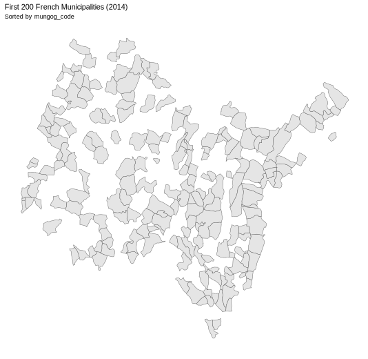

Details of the Geographic Datasets
This document explains the structure, conventions, and recommended usage patterns for the geospatial dataset containig the polygons for the municipalities (see Municipalities as Units of Analysis) of the 32 countries covered in the project. It assumes no formal GIS background—only that you can install and execute common tools like QGIS or the R sf / Python geopandas libraries.
A separate GeoPackage will be published for each country-year. At launch the project spans 11 reference years (2014 – 2024), which means 354 files (32 countries × 11 years) will be released. Each subsequent year, one additional file per country will be added to extend the time series.
Dataset snapshot
| Item | Description |
|---|---|
| Coverage | 32 European countries (see Contry LProject Status) |
| Time span | 2014 – latest validated release |
| Update cycle | Annual (Q1) |
| File format | GeoPackage (.gpkg) |
| Projection | ETRS89 / LAEA Europe — EPSG:30351 |
| Units | Metres |
| Encoding | UTF-8 |
| File name | <country_iso>mun<yyyy>.gpkg 2 |
Accessing Geospatial Files
The LoQoG geospatial datasets provides access to geospatial and municipal data through two distinct methods: a user-friendly download interface and a structured server-based folder system. This section outlines the organization of the server-based access method, including the folder structure, file naming conventions, and an example for accessing data for Norway.
Server-Based File Access
The LoQoG geospatial dataset are hosted on the server at https://www.qogdata.pol.gu.se/loqog-documentation. The files are organized in a hierarchical folder structure designed to facilitate access to geospatial data for European municipalities. The folder path follows this pattern:
- Base URL:
https://www.qogdata.pol.gu.se/loqog-documentation - Data Directory:
/data - Geospatial Directory:
/geo - Country Code:
/[cc], where[cc]represents the two-letter country code (in lowercase) for a European country, following the ISO 3166-1 alpha-2 standard (e.g.,nofor Norway). - File Name:
[cc]_mun_2014.gpkg, where[cc]is the country code and_mun_2014.gpkgindicates the municipal geospatial data for the year 2014 in GeoPackage format.
Thus, the full path to a country’s municipal data file is:
https://www.qogdata.pol.gu.se/loqog-documentation/data/geo/no_mun_2014.gpkg
Variable dictionary
year
Type: 4-digit INTEGER
Description: Four-digit reference year that identifies the annual snapshot to which this geometry record belongs
Example: 2014
Constraints: Ranges 2014 – 2024. Part of the composite primary key (used for joins with other tables).
cname
Type: TEXT
Description: Country name under the criteria used in the Quality of Government Institute data provision
Example: France
Constraints: See this QoG codebook for details
original_code
Type: TEXT
Description: Official national municipality code as issued by the country source
Example: 01001
Constraints: Digits only; often begins with a leading zero, so treat as text to preserve that zero and ensure reliable joins. Part of the composite primary key.
munqog_code
Type: TEXT
Description: Project’s stable identifier that remains constant across years, enabling the same geography to be traced through time
Example: fr-01015-1
Constraints: Format <ISO>-<original_code>-<revision>
* Begins with the two-letter ISO country code
* Continues with the unchanged original municipal code
* Ends with a revision counter that increments when boundaries change
Part of the composite primary key.
mun_name
Type: TEXT
Description: Original municipality name exactly as provided in the source geospatial file
Example: L'Abergement-Clémenciat
Constraints: UTF-8; may include accents and special characters.
geonames_id
Type: INTEGER
Description: Alternative name ID from GeoNames
Example: 6612157
Constraints: Value taken directly from https://www.geonames.org.
alternate_names
Type: TEXT
Description: Alternative municipality name from GeoNames
Example: L'Abergement-Clemenciat
Constraints: None.
geom
Type: MULTIPOLYGON
Description: Boundary geometry in EPSG 3035
Example: —
Constraints: Not NULL.
Rationale behind choosing gpkgfile format
| Feature | GeoPackage | Shapefile | GeoParquet |
|---|---|---|---|
| Multi-layer single file3 | ✔️ | ✖️ (many files) | n/a |
| Unicode & long field names4 | ✔️ | ✖️ | ✔️ |
| Attribute type safety5 | ✔️ | ✖️ | ✔️ |
| Widespread GIS support | ✔️ | ✔️ | ✔️ (growing) |
| Spatial index included6 | ✔️ | ✖️ | ✔️ |
| Open standard (OGC)7 | ✔️ | ✖️ | ✔️ |
Test Our Code Examples
GeoPackages for four representative countries, spanning the ten-year window 2014 – 2024, are hosted on the project servers. The example R and Python scripts load these files directly over, so you can reproduce every step without first saving any data locally and litearrly runninf the codes as they are. Later sections show how to download the full dataset if needed; this section is meant only as a quick, hands-on demonstration of the concepts introduced above.
Accesing a file and plotting some polygons
R code
# Load necessary libraries or install them firstly if you do not have them
library(tidyverse)
library(sf)
library(ggthemes)
# URL to the file
url <- "https://www.qogdata.pol.gu.se/loqog-documentation/data/geo/fr_mun_2014.gpkg"
# Read the GPKG file directly from the URL
destfile <- tempfile(fileext = ".gpkg")
# Download it
# mode = "wb" is critical on Windows so you get the raw bytes, not text
download.file(url, destfile, mode = "wb")
# 4) Read it with sf
mun <- st_read(destfile)
# Check the projection (CRS), it should be 3035
st_crs(mun)
# Arrange by mungog_code and plot the first 200 municipalities
mun %>%
arrange(munqog_code) %>%
slice(1:200) %>%
ggplot() +
geom_sf() +
theme_map() +
labs(title = "First 200 French Municipalities (2014)", subtitle = "Sorted by mungog_code")
# View the dataset in the viewer
View(municipalities_sorted)Python code
import geopandas as gpd
import matplotlib.pyplot as plt
# URL to the GPKG file
url = "https://www.qogdata.pol.gu.se/loqog-documentation/data/geo/fr_mun_2014.gpkg"
# Read the GeoPackage directly from the URL
municipalities = gpd.read_file(url)
# Check the projection (CRS)
print("CRS:", municipalities.crs)
# Sort by 'mungog_code' and take the first 200
municipalities_sorted = municipalities.sort_values("mungog_code").head(200)
# Plot
municipalities_sorted.plot()
plt.title("First 200 French Municipalities (2014)\nSorted by mungog_code")
plt.axis("off")
plt.show()
# Show first rows in viewer-style output
municipalities_sorted.head()You should see this results with the R code

Dowloand all files for all years for one country
R code
# This shows how to dowaload all the geo fiels for France from R directly
# base url for accessing files (see Accessing Geospatial Files)
url <- "https://www.qogdata.pol.gu.se/loqog-documentation/data/geo/fr_mun_"
# generate links
(links <- paste0(url, 2014:2024, ".gpkg"))
# function to access the files
read_remote_gpkg <- function(url) {
tmp <- tempfile(fileext = ".gpkg")
download.file(url, tmp, mode = "wb")
st_read(tmp, quiet = TRUE)
}
# Download them and store them in a list
maps[14:24] <- map(links, read_remote_gpkg)
# Extract and inspect the French map for 2020
maps[[20]] %>%
head %>%
view()Footnotes
ETRS89 / LAEA Europe (EPSG:3035) is the standard equal-area projection endorsed by Eurostat. It preserves surface-area comparability across the continent and aligns with the 1 km EU grid.↩︎
The country code is the two-letter ISO 3166-1 alpha-2 identifier (e.g., fr, de) listed in the Eurostat glossary of country codes. The year component is a four-digit calendar year. Combining these elements yields file names such as
fr_mun_2014.gpkg.↩︎Stores several vector/raster layers in one portable container instead of scattering multiple auxiliary files.↩︎
Supports accents, non-Latin scripts, and field names longer than 10 characters (Shapefile limit).↩︎
Preserves numeric and date types instead of forcing everything to plain text.↩︎
Comes with a built-in index so software can pan/zoom large datasets quickly with no extra steps.↩︎
Specification maintained by the Open Geospatial Consortium, ensuring long-term openness and interoperability.↩︎